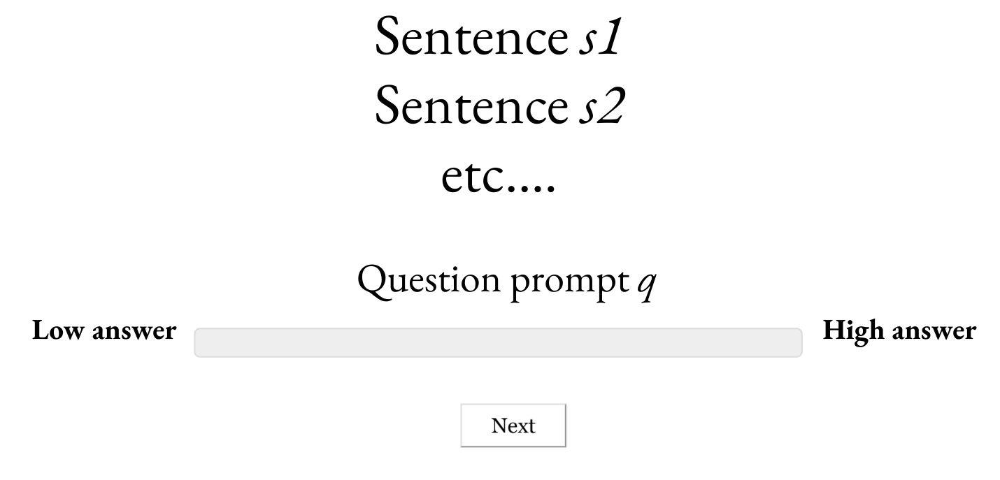
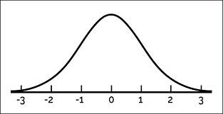
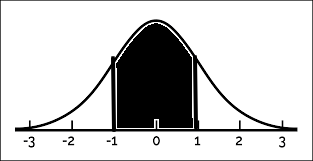

\[ \newcommand{\expr}[3]{\begin{array}{c} #1 \\ \bbox[lightblue,5px]{#2} \end{array} ⊢ #3} \newcommand{\ct}[1]{\bbox[font-size: 0.8em]{\mathsf{#1}}} \newcommand{\updct}[1]{\ct{upd\_#1}} \newcommand{\abbr}[1]{\bbox[transform: scale(0.95)]{\mathtt{#1}}} \newcommand{\pure}[1]{\bbox[border: 1px solid orange]{\bbox[border: 4px solid transparent]{#1}}} \newcommand{\return}[1]{\bbox[border: 1px solid black]{\bbox[border: 4px solid transparent]{#1}}} \def\P{\mathtt{P}} \def\Q{\mathtt{Q}} \def\True{\ct{T}} \def\False{\ct{F}} \def\ite{\ct{if\_then\_else}} \def\Do{\abbr{do}} \]
Semantic frameworks provide powerful tools for characterizing what we can and cannot mean in using linguistic expressions.
Important properties: compositional and modular.
Challenge: semantic frameworks don’t generally provide an apparatus for characterizing uncertainty about what we can mean in using linguistic expressions.
Result: they have great difficulty characterizing:
The magician’s assistant won’t admit that they laughed during the trick.
Did the magician’s assistant laugh?
The magician’s assistant won’t admit that they laughed during the trick.
Did the magician’s assistant laugh?
The magician’s assistant won’t admit that they laughed during the trick.
Did the magician’s assistant laugh?
The magician’s assistant won’t admit that they laughed during the trick.
Did the magician’s assistant laugh?
The magician’s assistant won’t admit that they laughed during the trick.
Did the magician’s assistant laugh?
The magician’s assistant won’t admit that they laughed during the trick.
Did the magician’s assistant laugh?
Average response:
The magician’s assistant won’t admit that they laughed during the trick.
Did the magician’s assistant laugh?
Average response:
Frameworks for probabilistic semantics and pragmatics provide powerful tools for characterizing uncertainty about what we can mean in using linguistics expressions:
Challenge: no general structure-preserving method for mapping between semantic analyses and probabilistic analyses.
Goal: framework where probabilistic reasoning can be added to a semantic analysis without changing its structure.
Result:
Large-scale inference datasets are becoming more and more central to linguistic methodology, and semantic theory should keep up!
We should think of an experimental trial as a little discourse.

Once we have modeled the entire discourse in terms of some semantic analysis, we end up with a distribution over answers to the question prompt.
About nature of speech act.
In some sense, independent of speech act.
What kind of thing goes where?
Many frameworks for dynamic semantics model sentence meanings as maps from input states to sets of output states (e.g., Groenendijk and Stokhof 1991; Muskens 1996, i.a.).
\[ \begin{align*} \ct{respond} &: \P σ → (σ → \P (⋄ × \Q ι α σ^{\prime})) → \P ρ \end{align*} \]
\[ \begin{align*} \ct{respond} &: \P σ → (σ → \P (⋄ × \Q ι α σ^{\prime})) → \P ρ \end{align*} \]
\[ \begin{align*} \mathcal{A} &\Coloneqq np ∣ n ∣ s ∣\,\,... \end{align*} \] Noun phrases (\(np\)), nouns (\(n\)), and sentences (\(s\)).
\[ \begin{align*} \mathcal{C}_{\mathcal{A}} &\Coloneqq \mathcal{A} ∣ \mathcal{C}_{\mathcal{A}}/\mathcal{C}_{\mathcal{A}} ∣ \mathcal{C}_{\mathcal{A}}\backslash\mathcal{C}_{\mathcal{A}} \end{align*} \]
An expression:
\[\Large \begin{align*} \expr{\textit{dog}}{λx, i.\ct{dog}(i)(x)}{n} \end{align*} \]
\[ \begin{align*} A \Coloneqq e ∣ t ∣\,\,... \end{align*} \]
\[ \begin{align*} \mathcal{T}_{A} \Coloneqq A ∣ \mathcal{T}_{A} → \mathcal{T}_{A} ∣ \mathcal{T}_{A} × \mathcal{T}_{A} ∣ ⋄ \end{align*} \]
data Type = Atom String -- atomic types
| Type :→ Type -- arrows
| Unit -- unit type
| Type :× Type -- products
| TyVar String -- type variables
deriving (Eq)
\[ \scriptsize
\begin{array}{c}
\begin{prooftree}
\AxiomC{}
\RightLabel{$\mathtt{Ax}$}\UnaryInfC{$Γ, x : α ⊢ x : α$}
\end{prooftree}
& \begin{prooftree}
\AxiomC{$Γ, x : α ⊢ t : β$}
\RightLabel{${→}\mathtt{I}$}\UnaryInfC{$Γ ⊢ λx.t : α → β$}
\end{prooftree}
& \begin{prooftree}
\AxiomC{$Γ ⊢ t : α → β$}
\AxiomC{$Γ ⊢ u : α$}
\RightLabel{${→}\mathtt{E}$}\BinaryInfC{$Γ ⊢ t(u) : β$}
\end{prooftree} \\[2mm]
\begin{prooftree}
\AxiomC{}
\RightLabel{$⋄\mathtt{I}$}\UnaryInfC{$Γ ⊢ ⋄ : ⋄$}
\end{prooftree}
& \begin{prooftree}
\AxiomC{$Γ ⊢ t : α$}
\AxiomC{$Γ ⊢ u : β$}
\RightLabel{$×\mathtt{I}$}\BinaryInfC{$Γ ⊢ ⟨t, u⟩ : α × β$}
\end{prooftree}
& \begin{prooftree}
\AxiomC{$Γ ⊢ t : α_1 × α_2$}
\RightLabel{$×\mathtt{E}_{j}$}\UnaryInfC{$Γ ⊢ π_{j}(t) : α_{j}$}
\end{prooftree}
\end{array}
\]
\[
\begin{prooftree}
\AxiomC{$Γ ⊢ t : α → β$}
\AxiomC{$Γ ⊢ u : α$}
\RightLabel{${→}\mathtt{E}$}\BinaryInfC{$Γ ⊢ t(u) : β$}
\end{prooftree}
\]
-- | Untyped λ-terms. Types are assigned separately (i.e., "extrinsically").
data Term = Var VarName -- Variables.
| Con Constant -- Constants.
| Lam VarName Term -- Abstractions.
| App Term Term -- Applications.
| TT -- The 0-tuple.
| Pair Term Term -- Pairing.
| Pi1 Term -- First projection.
| Pi2 Term -- Second projection.\[ A \Coloneqq e ∣ t ∣ r ∣\,\,... \]
\[ \mathcal{T}_{A} \Coloneqq A ∣ \mathcal{T}_{A} → \mathcal{T}_{A} ∣ \mathcal{T}_{A} × \mathcal{T}_{A} ∣ ⋄ ∣ \P \mathcal{T}_{A} \]
\[
\begin{array}{c}
\begin{prooftree}
\AxiomC{$Γ ⊢ t : α$}
\RightLabel{$\mathtt{Return}$}\UnaryInfC{$Γ ⊢ \pure{t} : \P α$}
\end{prooftree}
& \begin{prooftree}
\AxiomC{$Γ ⊢ t : \P α$}
\AxiomC{$Γ, x : α ⊢ u : \P β$}
\RightLabel{$\mathtt{Bind}$}\BinaryInfC{$Γ ⊢ \left(\begin{array}{l} x ∼ t \\ u\end{array}\right) : \P β$}
\end{prooftree}
\end{array}
\]
-- | Untyped λ-terms. Types are assigned separately (i.e., "extrinsically").
data Term = Var VarName -- Variables.
| Con Constant -- Constants.
| Lam VarName Term -- Abstractions.
| App Term Term -- Applications.
| TT -- The 0-tuple.
| Pair Term Term -- Pairing.
| Pi1 Term -- First projection.
| Pi2 Term -- Second projection.
| Return Term -- Construct a degenerate distribution.
| Let VarName Term Term -- Sample from a distribution and continue.Let x t u = \(\begin{array}[t]{l}
x ∼ t \\
u
\end{array}\)Return t = \(\pure{t}\)\[ \begin{array}[t]{l} x ∼ \ct{mammal}\\ \pure{\ct{mother}(x)} \end{array} \]
\[ \begin{align*} \ct{observe}\ \ &:\ \ t → \P ⋄ \\ \end{align*} \]
\[ \begin{array}[t]{l} x ∼ \ct{Normal}(0, 1) \\ \ct{observe}(-1 ≤ x ≤ 1) \\ \pure{x} \end{array} \]

\[ \begin{align*} \ct{observe}\ \ &:\ \ t → \P ⋄ \\ \end{align*} \]
\[ \begin{array}[t]{l} x ∼ \ct{Normal}(0, 1) \\ \ct{observe}(-1 ≤ x ≤ 1) \\ \pure{x} \end{array} \]
\[ \begin{array}[t]{l} x ∼ \ct{mammal} \\ \ct{observe}(\ct{dog}(x)) \\ \ct{observe}(\ct{friendly}(x)) \\ \pure{\ct{father}(x)} \end{array} \]
\[ \ct{Bernoulli} : r → \P t \]
\[ \begin{array}[t]{l} b ∼ \ct{Bernoulli}(0.5) \\ \ct{observe}(b) \\ \pure{b} \end{array} \]
\[\Large σ → \P (α × σ^{\prime}) \]
\(α\) could be:
\[ \begin{align*} ℙ^{σ}_{σ^{\prime}} α\ \ &=\ \ σ → \P (α × σ^{\prime}) \end{align*} \]
\[ \begin{align*} \return{v}\ \ &=\ \ λs.\pure{⟨v, s⟩} : ℙ^{σ}_{σ} \end{align*} \]
\[ \begin{align*} \begin{array}{rl} \Do & x ← m : ℙ^{σ}_{σ^{\prime}} \\ & k(x) : ℙ^{σ^{\prime}}_{σ^{\prime\prime}} \end{array}\ \ &=\ \ λs.\left(\begin{array}{l} ⟨x, s^{\prime}⟩ ∼ m(s) \\ k(x)(s^{\prime}) \end{array}\right) : ℙ^{σ}_{σ^{\prime\prime}} \end{align*} \]
\(\textit{run} : ℙ^{σ}_{σ} (e → ι → t)\)
\[ \expr{\textit{run}}{λs.\pure{⟨λx, i.\ct{if\_then\_else}(τ_{\textit{run}}(s))(\ct{run}_{loc.}(i)(x), \ct{run}_{org.}(i)(x)), s⟩}}{s \backslash np} \]
\[ \begin{prooftree} \AxiomC{$\expr{s_{1}}{M_{1}}{b}$} \AxiomC{$\expr{s_{2}}{M_{2}}{c\backslash b}$} \RightLabel{$<$}\BinaryInfC{$\expr{s_{1}\,s_{2}}{ \begin{array}{rl} \Do & m_{1} ← M_{1} \\ & m_{2} ← M_{2}; \\ & \return{m_{2}(m_{1})} \end{array} }{c}$} \end{prooftree} \]
\[\tiny\hspace{-6cm} \begin{prooftree} \AxiomC{$\expr{\textit{a ling.}}{λs.\pure{⟨λi, k.∃x.\ct{ling}(i)(x) ∧ k(i)(x), s⟩}}{s/(s\backslash np)}$} \AxiomC{$\expr{\textit{saw}}{λs.\pure{⟨λi, y, x.\ct{see}(i)(y)(x), s⟩}}{s\backslash np/ np}$} \AxiomC{$\expr{\textit{a phil.}}{λs.\pure{⟨λi, k, x.∃y.\ct{phil}(i)(y) ∧ k(i)(y)(x), s⟩}}{s\backslash np/(s\backslash np/np)}$} \RightLabel{$<$}\BinaryInfC{$\expr{\textit{saw a phil.}}{λs.\pure{⟨λx, i.∃y.\ct{phil}(i)(y) ∧ \ct{see}(i)(y)(x), s⟩}}{s \backslash np}$} \RightLabel{$<$}\BinaryInfC{$\expr{\textit{a linguist saw a philosopher}}{λs.\pure{⟨λi.∃x, y.\ct{ling}(i)(x) ∧ \ct{phil}(i)(y) ∧ \ct{see}(i)(y)(x), s⟩}}{s}$} \end{prooftree} \]
\[ \expr{\textit{a linguist saw a philosopher}}{λs.\pure{⟨λi.∃x, y.\ct{ling}(i)(x) ∧ \ct{phil}(i)(y) ∧ \ct{see}(i)(y)(x), s⟩}}{s} \]
Intensional constants:
\[ \begin{align*} \ct{see} &: ι → e → e → t \\ \ct{ling} &: ι → e → t \end{align*} \]
We require other constants:
\[ \begin{align*} \updct{see} &: (e → e → t) → ι → ι \\ \updct{ling} &: (e → t) → ι → ι \end{align*} \]
\[ \ct{see}(\updct{see}(p)(i)) = p \\ \]
\[ \ct{see}(\updct{ling}(p)(i)) = \ct{see}(i) \]
\[ \ct{ling}(\updct{ling}(p)(i)) = p \\ \]
\[ \ct{ling}(\updct{see}(p)(i)) = \ct{ling}(i) \]
A common ground is a probabilistic program of type \(\P ι\).
\[\ct{@} : ι\]
\[\small \begin{array}[t]{l} h ∼ \abbr{Normal}(0, 1) \\ \pure{\updct{height}(λx.h)(\ct{@})} \end{array} \]
\[\scriptsize \begin{array}[t]{l} h_{j} ∼ \abbr{Normal}(0, 1) \\ h_{b} ∼ \abbr{Normal}(0, 1) \\ \pure{\updct{height}(λx.\ite(x = \ct{j}, h_{j}, h_{b}))(\ct{@})} \end{array} \]
Some state-sensitive constants:
\[ \ct{CG} : σ → \P ι \\ \]
\[ \updct{CG} : \P ι → σ → σ \\ \]
\[ \ct{QUD} : \Q ι α σ → α → ι → t \]
\[ \updct{QUD} : (α → ι → t) → σ → \Q ι α σ \]
\[ \ct{CG}(\updct{CG}(cg)(s)) = cg \]
\[ \begin{align*} \abbr{get} &: ℙ^{σ}_{σ} σ \end{align*} \]
\[ \begin{align*} \abbr{put} &: σ^{\prime} → ℙ^{σ}_{σ^{\prime}} ⋄ \\ \end{align*} \]
\[ \begin{align*} \abbr{assert} &: ℙ^{σ}_{σ^{\prime}} (ι → t) → ℙ^{σ}_{σ^{\prime}} ⋄ \end{align*} \]
\[ \begin{align*} \abbr{assert}(\textit{Jo is tall}) &= \begin{array}[t]{rl} \Do & p^{ι → t} ← \textit{Jo is tall}^{ℙ^{σ}_{σ} (ι → t)} \\ & s ← \abbr{get} \\ & c ← \return{\ct{CG}(s)} \\ & c^{\prime} ← \return{\left(\begin{array}{l} i ∼ c \\ \ct{observe}(p(i)) \\ \pure{i} \end{array}\right)} \\ & \abbr{put}(\updct{CG}(c^{\prime})(s)) \end{array} \end{align*} \]
\[ \begin{align*} \abbr{ask} &: ℙ^{σ}_{σ^{\prime}} (α → ι → t) → ℙ^{σ}_{\Q ι α σ^{\prime}} ⋄ \end{align*} \]
\[ \begin{align*} \abbr{ask}(\textit{how tall?}) &= \begin{array}[t]{rl} \Do & q^{r → ι → t} ← \textit{how tall?}^{ℙ^{σ}_{σ}(r → ι → t)} \\ & s ← \abbr{get} \\ & \abbr{put}(\updct{QUD}(q)(s)) \end{array} \end{align*} \]
\[ \begin{align*} \abbr{respond}^{f_Φ : r → \P ρ} &: \P σ → ℙ^{σ}_{\Q ι r σ^{\prime}} ⋄ → \P ρ \end{align*} \]
\[ \begin{align*} &\abbr{respond}^{f_Φ : r → \P ρ}(prior)(discourse) \\[5mm] &= \begin{array}[t]{l} s ∼ prior \\ ⟨⋄, s^{\prime}⟩ ∼ discourse(s)\\ i ∼ \ct{CG}(s^{\prime}) \\ f(\ct{max}(λd.\ct{QUD}(s^{\prime})(d)(i)), Φ) \end{array} \end{align*} \]
\[ \begin{align*} \abbr{respond}^{f_Φ : r → \P ρ} &: \P σ → ℙ^{σ}_{\Q ι r σ^{\prime}} ⋄ → \P ρ \end{align*} \]
\[ \abbr{respond}^{λx.\ct{Normal}(x, 1)}(prior)\left( \begin{array}{rl} \Do & \abbr{assert}(\textit{Jo is tall}) \\ & \abbr{ask}(\textit{how tall?}) \end{array} \right) \]
Probabilistic dynamic semantics